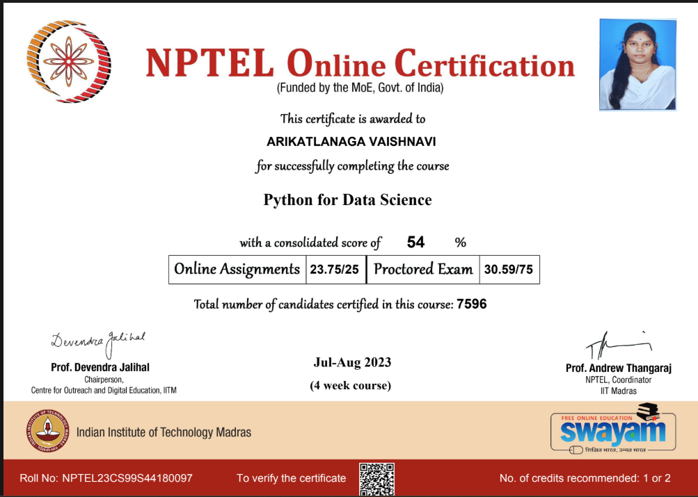
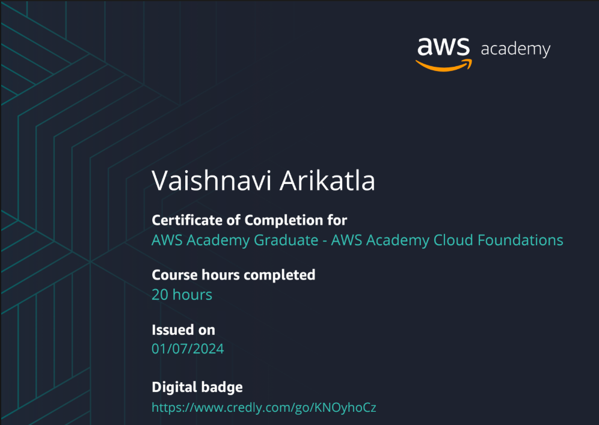
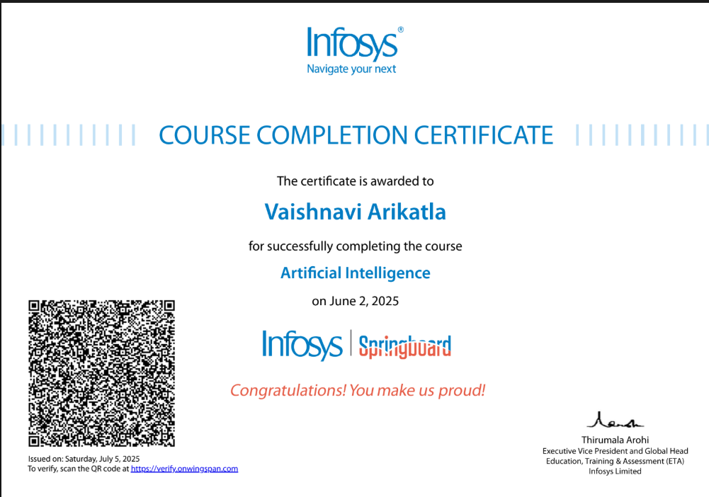
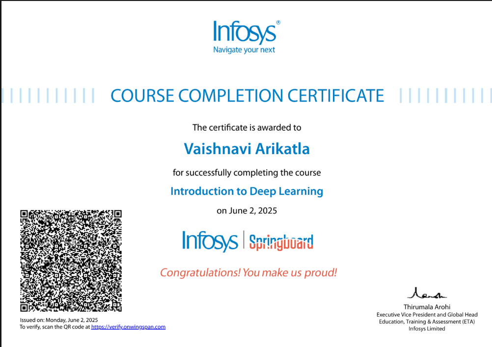

Employee Burnout Analysis
MACHINE LEARNING
Developed a machine learning model to analyze employee data and predict burnout risk, supporting the identification of potential employee attrition.
Model accuracy: 87%
Python,Scikit-Learn,Pandas,MatplotlibHELLO, I'M
I build practical solutions using machine learning and web technologies, and enjoy turning ideas into useful applications.
I'm Vaishnavi Arikatla, a Computer Science graduate passionate about Artificial Intelligence, Machine Learning, and Software Development.
I enjoy using Python and machine learning tools to explore data, build predictive models, and solve practical problems. Through academic projects and internships, I've gained experience in data preprocessing, model development, and web application development.
I'm eager to begin my professional journey, contribute to real-world projects, and continue learning as part of a collaborative team.
Practical projects showcasing my experience with machine learning, data analysis, and application development.
MACHINE LEARNING
Developed a machine learning model to analyze employee data and predict burnout risk, supporting the identification of potential employee attrition.
Model accuracy: 87%
Python,Scikit-Learn,Pandas,MatplotlibPREDICTIVE ANALYTICS
Built a machine learning model to predict loan eligibility from customer data, using feature scaling and hyperparameter tuning to improve model performance.
Python,Scikit-Learn,Pandas,Jupyter NotebookSPEECH & AI
Developed a speech emotion recognition application to analyze audio and identify emotions using speech features and machine learning.
Python,Streamlit,FFmpegCOMPUTER VISION & ML
Developed a safety-focused application using Python and machine learning, with OpenCV for image annotation. Integrated the components using Docker and used Grafana to visualize reports and monitoring data.
Python,Machine Learning,OpenCV,Docker,GrafanaRESPONSIVE WEB DEVELOPMENT
Designed and developed a responsive business website for Sai Geethika Granites, showcasing Black Galaxy Granite and the company's products and operations.
Technologies: HTML, CSS, JavaScript

View Certificate ↗
View Certificate ↗
View Certificate ↗
View Certificate ↗AI & ML; ML Intern
Full Stack Developer Intern
Full Stack Developer Intern
AI & ML Intern
Worked on the Safety Eye project, a safety-focused application developed as part of the internship.
vaishnviarikatla05@gmail.com
Phone: +91 9398857542
LinkedIn: linkedin.com/in/vaishnaviprofile
GitHub: github.com/vaishnavigithub